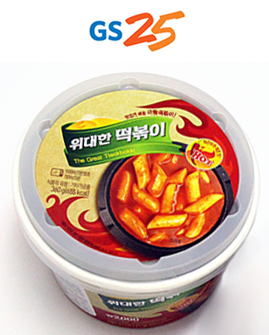
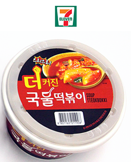

떡볶이란???
떡볶이 분석
편의점 떡볶이 비교
자이언트 떡볶이
위대한 떡볶이
더 커진 국물 떡볶이


가격
2000원
2000원
2000원
용량
300g
360g
310g
칼로리
675kcal
655kcal
710kcal
떡 개수
62개
71개
59개
떡 종류
쌀떡
실제 조리 시간
일치(3:30)
초과!(4:30)
일치(2:30)
맛 평가
3.4점
3.1점
1.2점
최종 선호도
2위
1위
3위
프랜차이즈 떡볶이 2020 순위
신전떡볶이
동대문엽기떡볶이
감탄떡볶이
청년다방
죠스떡볶이
최근 가장 유행하는 라이스페이퍼떡볶이에 대하여!
클릭!